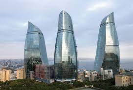
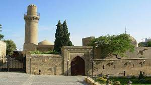

Azerbaycan’da Gezilecek Yerler
Alev Kuleleri, Bakü
Listemize MIPIM tarafından 2013 yılında “En İyi Otel ve Turizm Kompleksi” ödülü almış Alev Kuleleri ile başlıyoruz.Bakü’de bulunan ve 3 kuleden oluşan bu yapının dış kısmının tamamı LED ekranlarla kaplı. İngilizce ismi “Flame Towers” olan Alev Kuleleri, zamanında Extreme Engineering isimli bir belgesele konu olmuş, aynı zamanda Build it Bigger programında da bir bölüme konuk olmuş. İçinde apartmanlardan ofislere ve otellere kadar birçok şeyi barındıran ve Azerbaycan’ın en uzun binası olan Alev Kuleleri’ni merak etmemek elde değil!
Kız Kalesi, Bakü

İçeri Şehir bölümünde yer alan ve Şirvanşahlar Sarayı ile birlikte UNESCO Dünya Miras Listesi’ne giren Kız Kalesi Azerbaycan’ın simgelerinden en çok bilineni! Şehrin en gizemli ve en muhteşem mimarlık abidesi sayılan kalenin iç kısmı 8 kata ayrılmış durumda. Her bir kat yontma taşlarla inşa edilip kubbe formalı tavanla örtülmüş. Taşla örülü tavanın ortasında daire şeklinde delikler bulunuyor, 8. katın tavanının ortasındaki delikten bakınca 1. katın tabanını görebiliyorsunuz. Gittiğiniz tarihe dikkat edin, şayet Nevruz Bayramı şenlikleri her yıl düzenli olarak kale ve çevresindeki meydanda yapılıyor. Kale diyince akla meşhur Azeri türküsü geliyor “Bu gala daşlı gala, cıngıllı daşlı gala”…
Şirvanşahlar Sarayı, Bakü
Karşınızda Yakın Doğu’nun en ihtişamlı sarayı! UNESCO Dünya Miras Listesi’ne nasıl girdiğini anlamak güç değil. 52 odalı sarayın surları içinde şahın ailesi için bir türbe ve bir saray hamamı ayrılmış. Mimari özellikleriyle dikkat çeken sarayda başka bir dikkat çeken kısım ise 34 basamakla inilen yer altı su deposu. Zamanında sarayın su ihtiyacını tek başına karşılıyormuş. İki katlı Şirvanşahlar Sarayı’nın üst katında şah ve ailesi, alt katında ise devlet işleri için misafirlerin kaldığı yer olarak kullanılıyormuş. İçinde çocuklar eğitim alabilsin diye yaptırılan Keykubad Mescidi ve Şah Mescidi bölümleri olan sarayda “büyük kapı” ismiyle bilinen Murad Darvazası bölümü ise Osmanlı Dönemi’nden kalma.